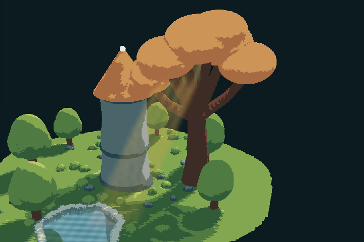
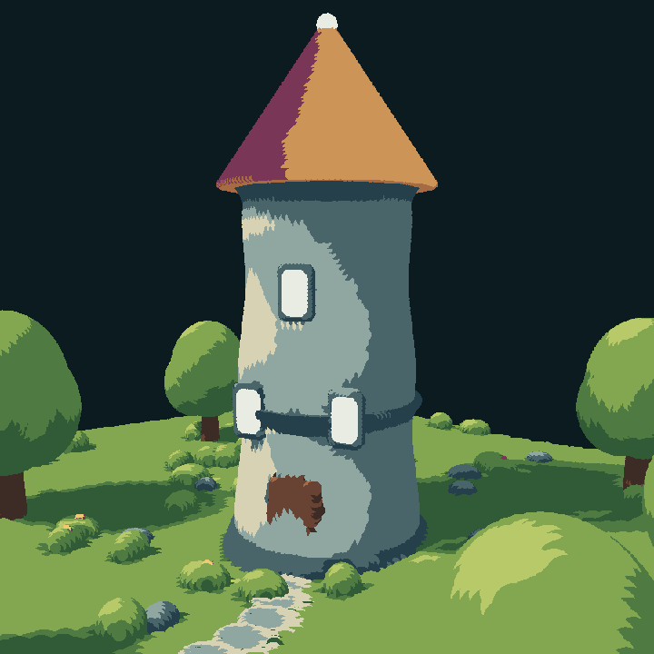

Torre
Torre de pedra com janelas acesas, jardim, árvores e caminho até a porta.
◈ Entrar no Dimension ExplorerQuatro cenas 3D em pixel-art que você gira com o mouse. Cada uma foi escrita em código e é formada por dezenas de milhares de Gaussian splats, pequenas manchas 3D com cor, forma e orientação.
Escolha uma cena para entrar no Dimension Explorer, o modo 3D: arrastar gira · roda aproxima · botão direito move o foco · Esc sai

Torre de pedra com janelas acesas, jardim, árvores e caminho até a porta.
◈ Entrar no Dimension Explorer
Uma árvore antiga 5/4 mais alta que a torre, com feixes de sol paralelos atravessando a copa.
◈ Entrar no Dimension Explorer
Um lago de margem irregular com reflexo planar recalculado a cada ângulo da câmera.
◈ Entrar no Dimension Explorer
Copa com mais ramos e folhas, preparada para o vídeo da câmera em arco.
◈ Entrar no Dimension Explorer180 quadros renderizados pelo Ink Studio: a câmera percorre cerca de 198° em 12 segundos.
Cada cena começa como código, vira uma nuvem de splats e é desenhada como elipses que formam superfícies. Dá para refazer tudo em oito passos, a partir de um modelo pronto.
// corpo da torre S.lathe([0, 0, 0], 5.5, t => 1.38 - t * 0.22, pedra, { res: 0.09 }); // telhado em cone S.lathe([0, 5.6, 0], 2.25, t => 1.52 * (1 - t), telhado, { res: 0.075 }); // vira splats S.bake();

